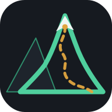

Rutas por el Monte
Catálogo de senderismo
🌙
Instala esta app para acceder más rápido y usarla sin conexión.
Instalar
✕
Estadísticas generales
Reparto por dificultad, país, características y ranking de popularidad
Ver todas →
Filtros ▾
No se han encontrado rutas con ese criterio.
Cargar más rutas
📡 Sin conexión — mostrando datos guardados